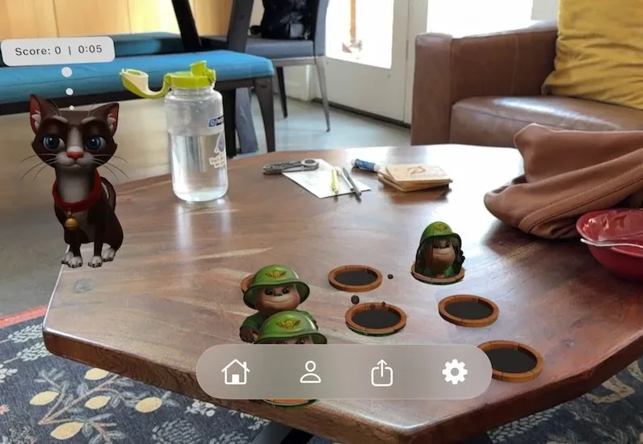
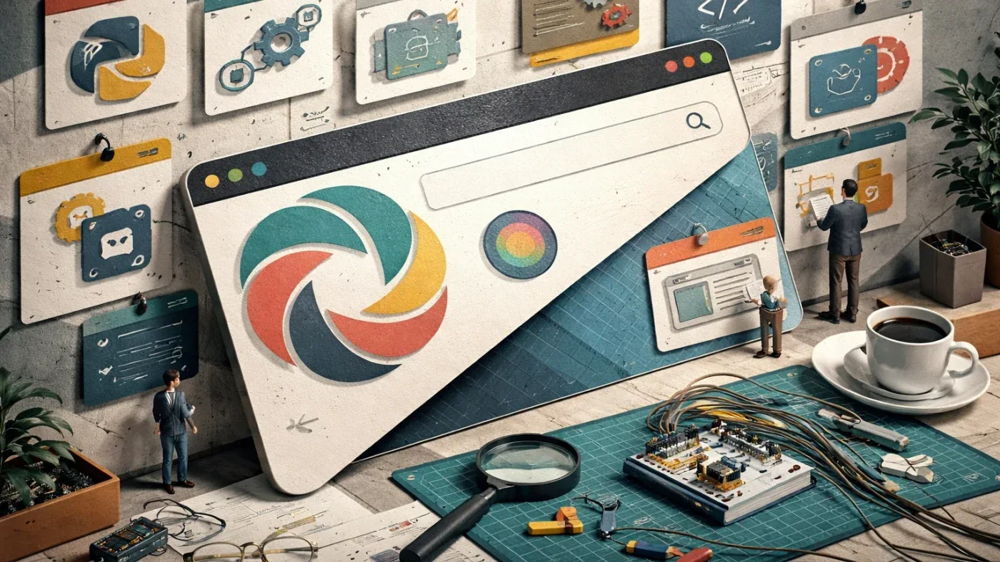
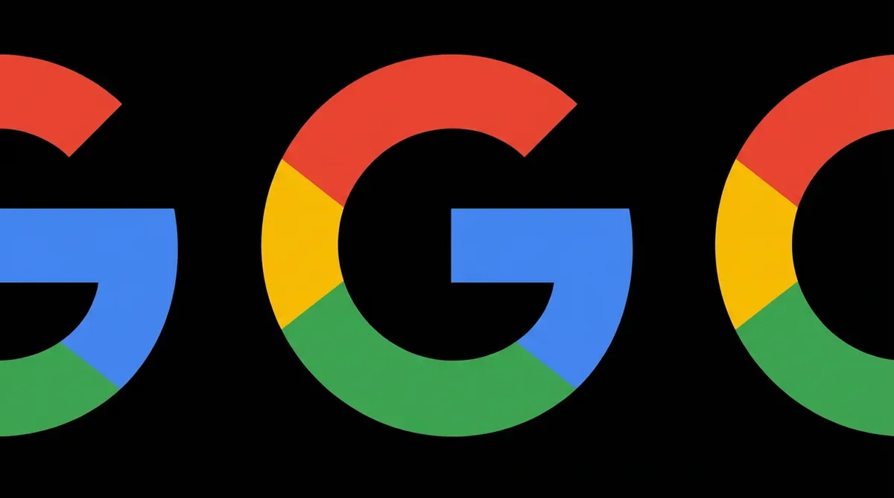
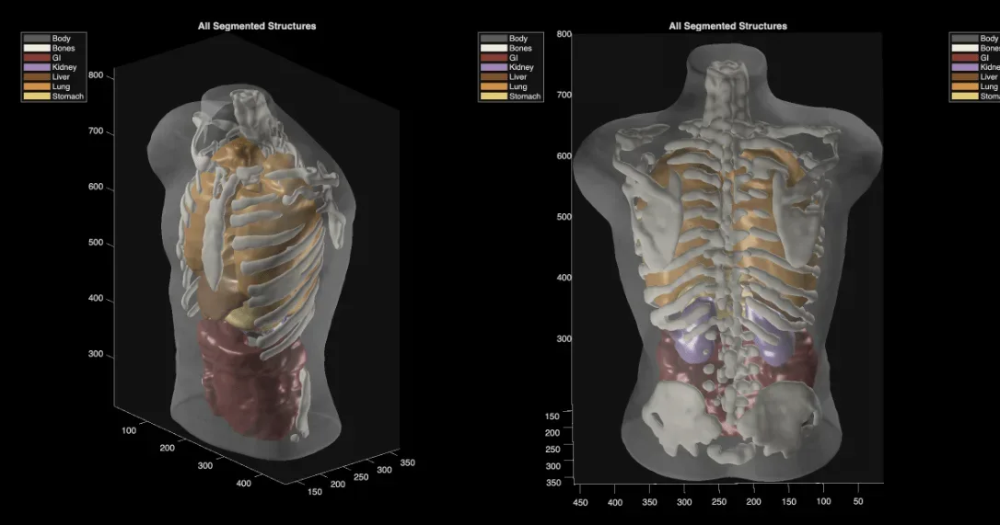
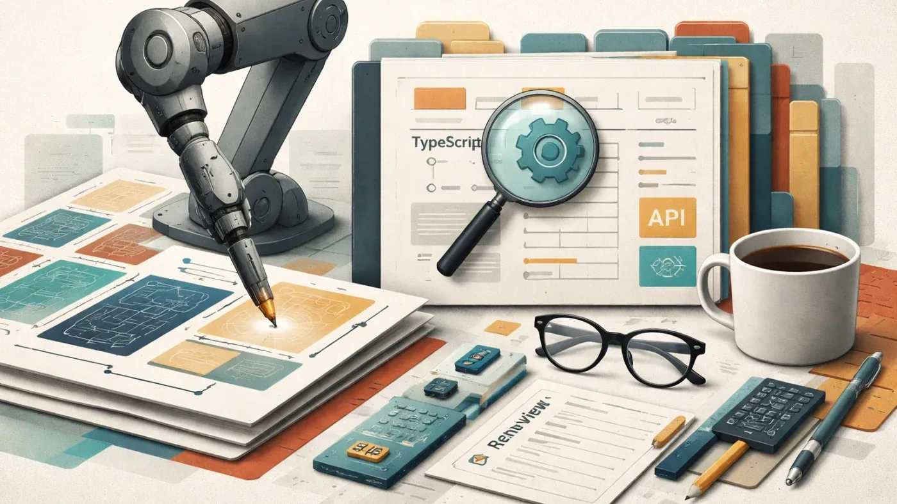
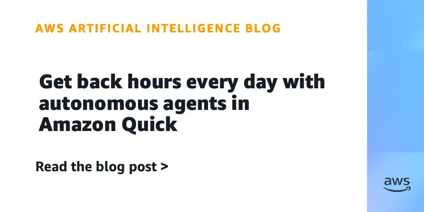

Код
Почему Anthropic заблокировал 2 млн аккаунтов Claude и как не попасть в их число
2 млн заблокированных аккаунтов Claude за год — разбираем 5 триггеров и чек-лист защиты
Habr AI
18 июн.Релизы, исследования, продукты, инвестиции и AI-рынок.
Архив · 741 новостных материалов · Автоматическое пополнение приостановлено
2 млн заблокированных аккаунтов Claude за год — разбираем 5 триггеров и чек-лист защиты
Как советы директоров могут предотвратить удар ИИ, когда бизнес кажется успешным — три принципа Итая Саги
Как ИИ меняет критерии оценки стартапов на seed-стадии — мнение главы AT&T Ventures

Отправляйте друзьям живых AR-персонажей в iMessage — они видят мир через камеру и реагируют на вас.

ИИ-агент в «Яндекс Командировках» сам подберёт рейс и отель по вашим условиям

Midjourney строит томограф: 3D-снимок всего тела за минуту в ванне с ультразвуком
ИИ-агент в «Яндекс Командировках» сам бронирует билеты и отели по одному текстовому запросу
СУБД Platform V Pangolin DB от «СберТеха» получила поддержку векторного поиска для ИИ-задач.
«Первый Бит» запустил ИИ-платформу с готовыми агентами и конструктором для бизнеса
PT Naira берёт на себя рутину SOC-аналитика — расследования быстрее на 60%, порог входа ниже на 90%
Как кэш для LLM делает агента дорогим без единой ошибки — и что с этим делать

OpenAI сделала браузер с ChatGPT внутри — но зачем, если есть Chrome с расширением?
Как устроен кодинг-агент изнутри: Agent Loop, sandbox и почему bash — не универсальное решение
Четыре студента основали Cursor в 2022-м — SpaceX покупает их компанию за 60 млрд долларов
Паспорт вместо логина: OpenAI и Anthropic закрывают анонимный доступ к своим моделям
Платформа для бизнес-анализа по BABOK избавилась от привязки к Claude и заработала с локальными моделями
Fable 5 заблокирована, Cursor продан за $60 млрд — неделя, которая переписала расклад в ИИ для разработчиков
Франция вводит в строй ИИ-инфраструктуру: 18 000 GB200, открытые модели и агенты в продакшне

Соавтор трансформера и сооруководитель Gemini переходит из Google в OpenAI
Рекорд потерь и рекорд находок: что изменилось в поиске питомцев в России за год
Google Docs назойливо предлагает Gemini? Рассказываем, как убрать ИИ-подсказки и вернуть чистый интерфейс.

Midjourney представила ультразвуковой сканер всего тела — от «картинок с котиками» до медицинского оборудования.

Как зашить архитектурные правила в CI, чтобы Claude Code перестал склеивать всё со всем
Tracer, ClickHouse и ReAct: как VK Cloud Conf 2026 анонсировала инструмент для отладки с ИИ-агентами
Венчурный инвестор, нашедший Facebook, объясняет, почему ставка на ИИ-инфраструктуру не принесёт сверхдоходов.
Как собрать управляемый Deep Research без подписки за $100 — на open-source и бесплатных API
ИИ написал код и тесты — мутационное тестирование нашло дыры там, где покрытие казалось отличным
Почему зелёный дашборд adoption ничего не доказывает — и что спросить у себя вместо него

Amazon Quick обзавёлся автономными агентами, работающими без участия пользователя, и лентой активности с умной приоритизацией.
Amazon SageMaker ИИ Async Inference: inline-запросы до 128 КБ без S3 — меньше кода, меньше затрат